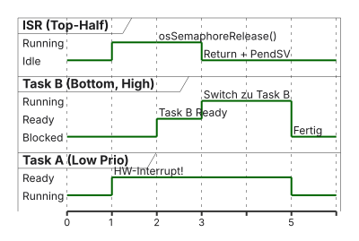

graph TD
P[Task A: Producer]
C[Task B: Consumer]
P -->|Schreibt Daten| C
style P fill:#FFFFFF,stroke:#E2001A,stroke-width:2px !important
style C fill:#F5F5F7,stroke:#1D1D1F,stroke-width:2px !important
05 · Inter-Task-Kommunikation und Interrupts
Queues, Mailboxes und ISR-Anbindung · EZS · DHBW Stuttgart
Prof. Dr.-Ing. Daniel Klünder
Willkommen zurück zu Echtzeitsysteme!
- Herzlich willkommen zum 5. Termin unserer Vorlesung
- Halbzeit! Sie kennen nun die Grundlagen von Scheduling und Ressourcenverwaltung
- Letzte Woche: Die dunkle Seite der Präemption (Race Conditions, Priority Inversion)
- Heute: Wie transportieren wir Daten sicher von A nach B?
- Außerdem: Wie binden wir Hardware-Interrupts professionell an ein RTOS an?
Agenda für heute
- Recap: Mutexe und Priority Inversion
- Das Problem: Transport kontinuierlicher Datenströme
- Inter-Process Communication (IPC): Queues
- CMSIS-API für Queues und Value vs. Reference
- Der Spezialfall: Mailboxes (Status vs. Events)
- [Nach der Pause] Interrupts im RTOS: Top-Half und Bottom-Half
- Ausblick Labor: Deferred Interrupt Processing am STM32H755
Recap: Die Lehren aus Termin 4
- Race Conditions: asynchrone Präemption in geteilten Variablen (Read-Modify-Write zerreißt)
- Mutex: exklusives Schloss mit Besitzrecht (Ownership) für Critical Sections
- Priority Inversion: Low-Task blockiert High-Task
- Rettung (Priority Inheritance): OS boostet die Low-Task temporär auf die Priorität der wartenden High-Task
Mutexe schützen, aber transportieren nicht!
- Ein Mutex eignet sich perfekt für:
- Den UART-Port (eine Task schreibt, die andere wartet)
- Ein Setup-Struct (einmal schreiben, oft lesen)
- Problem: kontinuierlicher Datenstrom (Audio-Samples, Sensordaten)
- Task A produziert jede Millisekunde einen neuen Wert
- Task B liest und filtert
- Globale Variable + Mutex → mehr Zeit am Schloss als beim Rechnen
Motivation: Producer & Consumer
- Das häufigste Software-Muster in eingebetteten Systemen
- Producer (Erzeuger): liest Sensoren, empfängt Pakete, generiert schnell Rohdaten
- Consumer (Verbraucher): filtert, rechnet, Display — oft langsamer oder in Blöcken
- Leitfrage: Wie überbrücken wir unterschiedliche Geschwindigkeiten sicher?
Die Falle der globalen Variable
- Annahme: globale Variable
adc_value - Producer überschreibt jede \(1\,\mathrm{ms}\)
- Consumer kommt nur alle \(5\,\mathrm{ms}\) dazu
- Ergebnis: Datenverlust, obwohl das OS fehlerfrei läuft
Die Lösung: IPC via Betriebssystem
- Wir brauchen Inter-Process Communication (IPC)
- Das Betriebssystem muss die Datenverwaltung übernehmen
- Lösung: ein Puffer (Buffer)
- Speicherbereich für mehrere Werte
- Producer legt Daten vorne hinein
- Consumer holt Daten hinten heraus
- In RTOS-Systemen: Queue (Warteschlange)
Lernziele des heutigen Tages
- Das Producer-Consumer-Pattern verstehen
- Queues in CMSIS-RTOS anlegen, beschreiben und lesen
- Vor- und Nachteile von Copy by Value vs. Copy by Reference kennen
- Semantischen Unterschied Queue vs. Mailbox erklären
- [Nach der Pause] Hardware-Interrupts über Deferred Interrupt Processing anbinden
Die Queue (Warteschlange)
- Queue = Array im RAM, exklusiv vom OS verwaltet
- FIFO-Prinzip (First-In, First-Out)
- Was zuerst hineinlegt wird, kommt zuerst heraus (Supermarktkasse)
- Threadsicher: FreeRTOS schützt intern mit Interrupt-Sperren
- Keine eigenen Mutexe nötig beim Schreiben in eine Queue
Der Lebenszyklus einer Queue
graph LR
A[Create] --> B(Put / Write)
B --> C(Get / Read)
C --> B
C --> D[Delete]
style A fill:#FFFFFF,stroke:#86868B,stroke-width:2px !important
style B fill:#F5F5F7,stroke:#E2001A,stroke-width:2px !important
style C fill:#F5F5F7,stroke:#E2001A,stroke-width:2px !important
style D fill:#FFFFFF,stroke:#86868B,stroke-width:2px !important
- Create: OS reserviert RAM für \(N\) Elemente der Größe \(X\) Bytes
- Put (Schreiben): Kopie der Daten hinten in die Queue
- Get (Lesen): vorderstes Element herausnehmen (wird entfernt!)
- Delete: RAM freigeben (auf MCUs oft ungenutzt — Queues leben ewig)
Speichermanagement einer Queue
- Vor der Nutzung dem OS zwei Dinge mitteilen:
- Länge: maximal wie viele Elemente? (z. B. 10)
- Elementgröße: Bytes pro Element? (z. B.
sizeof(uint32_t)\(= 4\))
- RAM-Bedarf: FreeRTOS reserviert sofort \(10 \times 4 = 40\) Bytes aus dem Heap
- plus OS-Overhead für die Queue-Verwaltung
- Dieser RAM ist reserviert, auch wenn die Queue leer ist
Die Magie: Blockieren bei Leerlauf
- Was passiert, wenn der Consumer
Get()aufruft und die Queue leer ist? - Bare-Metal: leere Variable lesen oder in
whilefestsitzen - RTOS: Consumer sofort in den Blocked-Zustand
- Task verbraucht \(0\%\) CPU, bis der Producer ein
Put()ausführt - Sobald ein Wert eintrifft: Consumer wird (bei ausreichender Prio) sofort aufgeweckt
Die Magie: Blockieren bei Überlast
- Was passiert, wenn der Producer
Put()aufruft und die Queue voll ist? - Option A (Timeout \(= 0\)): Fehler
osErrorResource, Wert verwerfen (Datenverlust) - Option B (Timeout \(> 0\)): Producer geht in den Blocked-Zustand
- Wartet, bis der Consumer Platz schafft
- Eleganter Mechanismus zur Drosselung (Throttling)
Zusammenfassung: IPC-Vorteile
- Datentransfer: Werte sicher von Task A nach Task B
- Synchronisation: automatisches Blockieren und Wecken (keine leeren
while-Schleifen) - Pufferung: Geschwindigkeitsunterschiede (Bursts) ausgleichen
- Thread-Safe: keine eigenen Mutexe nötig — das OS regelt den Zugriff
CMSIS-API: Queue anlegen
- CMSIS-RTOS v2 Abstraktion:
// Globale Variable (Handle) für die Queue
osMessageQueueId_t sensorQueue;
void System_Init() {
// Parameter 1: Anzahl der Elemente (z. B. 10)
// Parameter 2: Größe eines Elements (z. B. sizeof(uint32_t))
// Parameter 3: Optionale Attribute (meist NULL)
sensorQueue = osMessageQueueNew(10, sizeof(uint32_t), NULL);
if (sensorQueue == NULL) {
// Fehler! Heap ist voll, kein RAM mehr.
}
}CMSIS-API: Daten schreiben (Put)
- Der Producer legt Daten in die Queue:
void Task_ADC_Producer() {
uint32_t value = 0;
for(;;) {
value = Read_ADC_Hardware();
// Handle, Pointer auf Daten, Prio (immer 0), Timeout
osStatus_t status = osMessageQueuePut(
sensorQueue,
&value,
0,
0 // Timeout = 0 (nicht warten!)
);
if (status != osOK) {
// Queue ist voll, Wert verworfen!
}
osDelay(10); // Ticks; bei 1000 Hz = 10 ms
}
}CMSIS-API: Daten lesen (Get)
- Der Consumer wartet auf Daten:
Unter der Haube: Copy by Value
- FreeRTOS-Queues nutzen standardmäßig Copy by Value
- Put: OS kopiert den Wert byteweise in den eigenen Queue-RAM
- Get: OS kopiert den Wert zurück in die lokale Variable des Consumers
- Vorteil: Original-Variable des Producers ist danach völlig entkoppelt
graph LR
A[Var Producer] -- "Kopie 1" --> B[(OS Queue)]
B -- "Kopie 2" --> C[Var Consumer]
style A fill:#FFFFFF,stroke:#E2001A,stroke-width:2px !important
style B fill:#F5F5F7,stroke:#1D1D1F,stroke-width:1px !important
style C fill:#FFFFFF,stroke:#E2001A,stroke-width:2px !important
Der Feind der Queue: Große Daten!
- Copy by Value ist ideal für kleine Daten (z. B.
uint32_t, 4 Bytes) - Große Daten? Kamerabild \(320 \times 240\) Pixel \(= 76\,800\) Bytes
- Probleme:
- Queue wäre gigantisch (RAM-Verschwendung)
- Zweimaliges Kopieren von \(\approx 76\,\mathrm{KB}\) blockiert die CPU
memcpyzerstört Latenzgarantien
- Für große Daten ist Copy by Value streng verboten
Die Lösung: Copy by Reference (Pointer)
- Statt 76 KB: nur die Speicheradresse (Pointer) in die Queue
- Pointer auf Cortex-M4: immer exakt 4 Bytes
- Consumer liest 4 Bytes, hat die Adresse und liest das Bild direkt aus dem RAM
Gefahren von Copy by Reference
- Lebensgefahr: Producer darf
image_buffernicht mehr überschreiben, sobald der Pointer in der Queue liegt - Sonst: Race Condition — Consumer liest korrupte Pixel
- Lösung: Buffer-Ping-Pong (Double Buffering)
- Zwei getrennte Arrays
- Producer beschreibt Array 1, sendet Pointer 1
- Während Consumer Array 1 liest, beschreibt Producer Array 2
Der Spezialfall: Die Mailbox
- Oft verwechselt: Unterschied Queue vs. Mailbox?
- CMSIS/FreeRTOS: keine separate Mailbox-API — Spezialfall der Queue
- Mailbox = Queue der Länge 1
- Speichert exakt ein einziges Element
- Wichtigster Verhaltensunterschied: Überschreiben (Overwrite) ist ausdrücklich erwünscht
Wann Queue, wann Mailbox?
Queue (Events & Ströme)
- Tastendrücke (A, B, C abarbeiten)
- Audio-Daten
- Philosophie: kein Element darf verloren gehen
- Verhalten: blockiert, wenn voll
Mailbox (Zustand / Status)
- Aktuelle Temperatur, GPS-Position
- Philosophie: nur der neueste Wert zählt
- Verhalten: überschreibt alten Wert, blockiert nicht beim Schreiben
- FreeRTOS-Sonderfunktion:
xQueueOverwrite()
Das Broadcast-Konzept (Mailbox)
- Queue-
Getentnimmt das Element — danach ist die Queue leer - Status-Mailboxen: oft ein Producer, viele Consumer (Broadcast)
- Sensor schreibt Drehzahl
- Motor-, Display- und Logging-Task wollen lesen
- Peek (Spicken): Wert lesen, ohne ihn zu entfernen
osMessageQueueGet()entfernt- Native FreeRTOS:
xQueuePeek()
Zusammenfassung Halbzeit
- Producer-Consumer: entkoppelt langsame Verarbeitung von schnellen Rohdaten
- Queues: Puffer im RAM, vom OS verwaltet
- Volle Queue blockiert beim Schreiben, leere Queue beim Lesen (\(0\%\) CPU)
- Value vs. Reference: kleine Werte kopieren; große Daten (Bilder) als Pointer + Ping-Pong
- Mailbox: 1er-Queue für Zustände, die alte Daten überschreibt
Block 4: Interrupts im RTOS
- Wir wissen jetzt, wie Tasks untereinander reden
- Aber wie kommuniziert die Hardware (Außenwelt) mit unseren Tasks?
- Die Herausforderung:
- Ein Hardware-Interrupt (ISR) reißt die CPU aus dem RTOS-Kontext heraus
- Die ISR ist mächtiger als der Scheduler
- Wie bringen wir Hardware-Events und Software-Scheduling sicher zusammen?
Rückblick: Die goldene Regel der ISR
- Erinnern Sie sich an Termin 1?
- Eine ISR muss extrem kurz sein!
- Warum ist das im RTOS noch wichtiger?
- Solange die ISR läuft, ist die CPU komplett blockiert
- Bei höherer HW-Priorität als SysTick: der RTOS-Herzschlag kann nicht feuern
- Das Betriebssystem friert in der Zeit ein
- Alle Deadlines aller Tasks verschieben sich nach hinten
Das Architektur-Muster: Deferred Interrupt Processing
- Wie lesen wir komplexe Sensordaten (z. B. 10 KB Bilddaten per SPI) ein, wenn die ISR kurz sein muss?
- Lösung der Industrie: Deferred Interrupt Processing (verzögerte Interrupt-Verarbeitung)
- Arbeit in zwei Hälften:
- Top-Half (die ISR): reagiert blitzschnell auf die Hardware
- Bottom-Half (die Task): übernimmt die zeitaufwändige Datenverarbeitung
Die Top-Half (Die ISR)
- Läuft im echten Hardware-Interrupt-Kontext (z. B.
EXTI15_10_IRQHandler) - Unterbricht alles im System
- Aufgaben der Top-Half:
- Hardware-Flag (Interrupt) löschen, damit er nicht endlos feuert
- Kritische Rohdaten aus Hardwareregistern (z. B. UART
RDR) in den RAM retten - Das RTOS wecken (signalisieren)
- Sofort beenden
Die Bottom-Half (Die Task)
- Ist eine ganz normale C-Task in FreeRTOS
- Bekommt meist eine sehr hohe RTOS-Priorität
- Befindet sich zu \(99\%\) der Zeit im Zustand Blocked
- Aufgaben der Bottom-Half:
- Wartet auf das Signal der Top-Half (
osWaitForever) - Wacht auf
- Führt die aufwändige Logik durch (Filter, CRC, Float-Mathe, Display)
- Geht wieder schlafen
- Wartet auf das Signal der Top-Half (
Visualisierung: Top-Half und Bottom-Half
sequenceDiagram
participant HW as Hardware (Sensor)
participant ISR as Top-Half (ISR)
participant OS as FreeRTOS
participant Task as Bottom-Half (Task)
Note over Task: Task schläft (Blocked)
HW->>ISR: 1. Pin-Flanke (Interrupt)
Note over ISR: CPU blockiert
ISR->>ISR: 2. Daten ins RAM kopieren
ISR->>OS: 3. Sende Signal (z. B. Semaphore)
ISR-->>HW: 4. ISR beendet (Return)
Note over OS: Context Switch
OS->>Task: 5. Weckt Task (Ready -> Running)
Note over Task: 6. CPU im RTOS-Modus
Task->>Task: 7. Führt CRC und Filterung aus
Task->>OS: 8. Warte auf nächstes Event
Note over Task: Task schläft wieder
Wie signalisiert die Top-Half?
- Die ISR muss der Bottom-Half eine Nachricht zukommen lassen
- Was eignet sich dafür perfekt? (Erinnerung an Termin 4)
- Der binäre Semaphor!
- Bottom-Half:
osSemaphoreAcquire(..., osWaitForever)und blockiert - Top-Half:
osSemaphoreRelease(...) - Ergebnis: Task wacht auf → keine CPU-Zeit verschwendet
- Bottom-Half:
- Alternative für Daten: Queue (ISR:
osMessageQueuePut)
Die große Hürde: OS-Aufrufe in der ISR
- Massives Problem: OS-Funktionen (Put, Release) in einer Hardware-ISR
- OS-Funktionen können blockierend sein
- Was, wenn die Queue voll ist und die ISR
Put()aufruft?- OS würde versuchen, die ISR in die Blocked-Liste zu schieben
- Eine ISR kann man nicht schlafen legen
- Die CPU würde mit einem fatalen HardFault abstürzen
Native FreeRTOS-Lösung: Eigene ISR-Funktionen
- FreeRTOS besitzt eine doppelte API
- Für jede Funktion: Variante mit Suffix
...FromISR- Task:
xSemaphoreGive(mySem) - ISR:
xSemaphoreGiveFromISR(mySem, ...)
- Task:
- Unterschied: FromISR-Funktionen sind abgespeckt
- Blockieren niemals (Queue: z. B.
errQUEUE_FULL; Semaphor:pdFALSE) - Manipulieren Listen unterbrechungssicher
- Blockieren niemals (Queue: z. B.
Die CMSIS-RTOS v2 Abstraktion
- CMSIS: keine doppelten Funktionen (
FromISRexistiert in der API nicht) osSemaphoreRelease()ist intelligent- Liest heimlich das ARM-Register IPSR (Interrupt Program Status Register)
- Wenn \(\mathrm{IPSR} \neq 0\) (Handler Mode): wir sind in einer ISR → intern Umleitung auf
...FromISR - Wenn \(\mathrm{IPSR} = 0\) (Thread Mode): wir sind in einer Task → normaler Aufruf
Die eine CMSIS-Regel für ISRs
- CMSIS nimmt uns fast alles ab → aber: eine ISR darf niemals warten!
- Goldene Regel: in einer ISR (Top-Half) muss
timeoutimmer \(0\) sein osWaitForeverin einer ISR → Aufruf schlägt fehl (osErrorParameter)
Der Context-Switch aus der ISR (Yielding)
- Szenario:
- Task A (Prio Low) läuft
- ISR unterbricht Task A
- ISR ruft
Release()und weckt Task B (Prio High, Bottom-Half) - ISR beendet sich
- Was sollte passieren? Task B (High) sollte sofort rechnen
- Aber: OS schaltet standardmäßig erst beim nächsten SysTick (bis zu \(1\,\mathrm{ms}\))
- Folge: bis zu \(1\,\mathrm{ms}\) Reaktionslatenz verschenkt
Wie löst FreeRTOS das Yielding?
- Die ISR muss dem OS sagen: wichtige Task geweckt → wechsle sofort nach ISR-Ende
- Native FreeRTOS über Parameter:
- Dadurch triggert die ISR den PendSV-Interrupt manuell
CMSIS ist unser Freund!
- Müssen wir
portYIELD_FROM_ISRin CMSIS schreiben? - Nein!
- Wrapper
osSemaphoreRelease()macht Yielding intern automatisch - Höhere Prio der geweckten Task → CMSIS triggert PendSV von allein
- Sie schreiben nur:
osSemaphoreRelease(mySem);
Visualisierung: Präemption aus der ISR

- Latenz zwischen Hardware-Event (\(t=1\)) und Start der Bottom-Half (\(t=3\)) ist minimal
Laborvorbereitung: Deferred Interrupts
- Ziel: Hardware-Taster via EXTI-Interrupt und Semaphor an FreeRTOS-Task anbinden
- Hardware: blauer User-Button (B1) auf dem STM32H755 Nucleo, meist Pin PC13
- Setup in CubeMX:
- Pin PC13 als
GPIO_EXTI13(External Interrupt) - NVIC: Haken bei
EXTI line[15:10] interrupts(sonst feuert die ISR nicht) - FreeRTOS: binären Semaphor
ButtonSemanlegen - Task
ButtonTask(Bottom-Half) mit Priorität High
- Pin PC13 als
Schritt 1: Die Top-Half (ISR) in C
- CubeIDE generiert die ISR; wir nutzen den sicheren HAL-Callback
- In
main.cden leerenHAL_GPIO_EXTI_Callbackfüllen:
Schritt 2: Die Bottom-Half (Task) in C
- In der Endlosschleife der Task auf das Signal warten:
void StartButtonTask(void *argument)
{
for (;;) {
// 1. Schlafe (0% CPU), bis ISR signalisiert
osSemaphoreAcquire(ButtonSemHandle, osWaitForever);
// 2. WACH — hier die aufwändige Arbeit
HAL_GPIO_TogglePin(GPIOE, GPIO_PIN_1);
printf("BUTTON PRESSED!\n");
// Demo-Last (nur Demo!): busy-wait, Task bleibt Running
// In Produktion: osDelay(100); // Ticks; bei 1000 Hz = 100 ms
HAL_Delay(100); // Demo only — nicht in Produktion
}
}Was werden wir im Labor beobachten?
- Button drücken → LED und Console verzögerungsfrei (für das Auge)
- Beweis der RTOS-Architektur:
- Trotz
printfund Delay stürzen parallel laufende Tasks (z. B. blinkende LED) nicht ab - Eine noch wichtigere Task könnte unser
printfpräemptieren
- Trotz
- Hardware-Interrupts und Software-Scheduling sind sicher vereint
Zusammenfassung des Tages
- Queues: transportieren Daten (Values oder Pointer) threadsicher zwischen Tasks; blockieren bei Über-/Unterlast
- Mailboxes: Zustandskommunikation (Overwrite erlaubt)
- ISRs müssen extrem kurz sein, damit der RTOS-SysTick nicht blockiert
- Deferred Interrupt Processing: Top-Half-ISR löst nur ein Event (Semaphor) aus; Bottom-Half-Task erledigt die Arbeit
- CMSIS-RTOS v2: FromISR-Logik und Context-Yielding automatisch